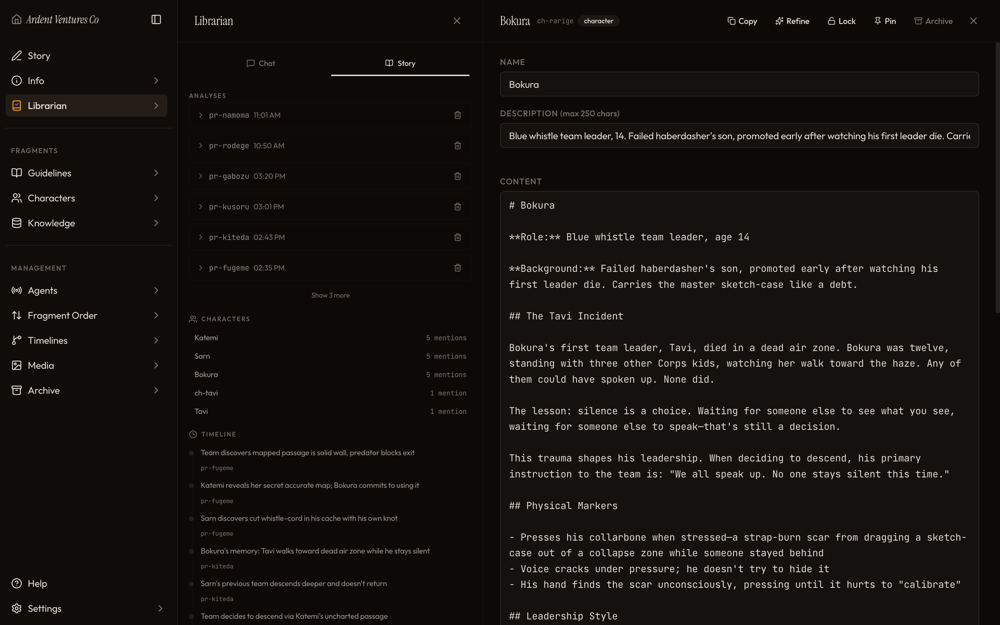
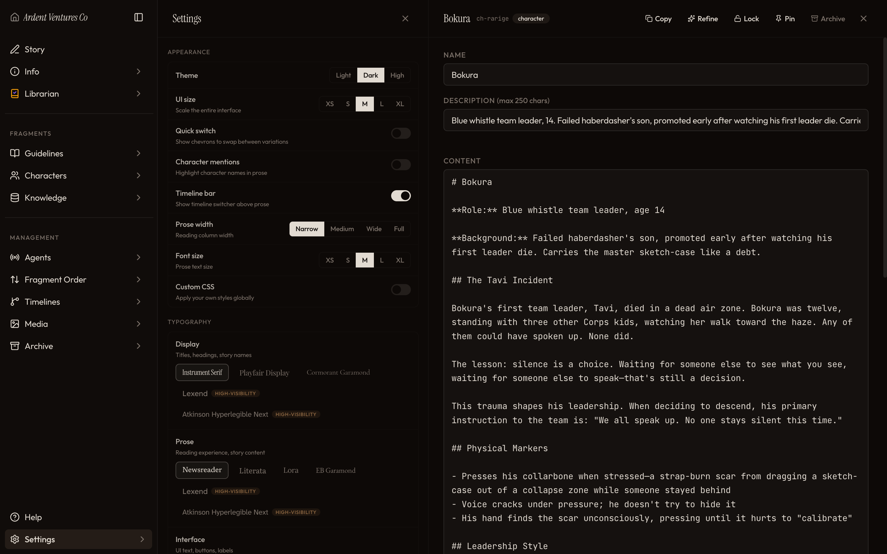
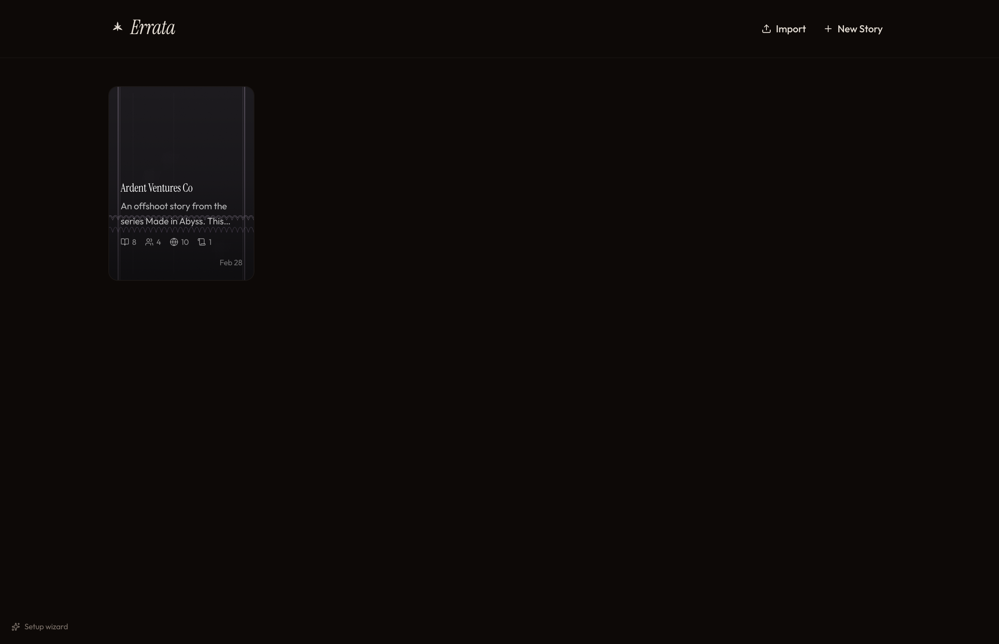
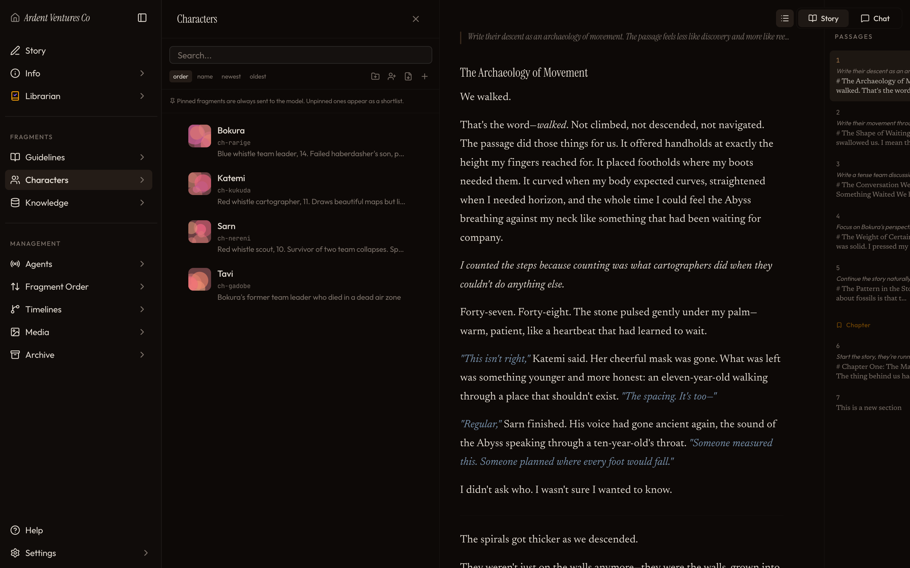
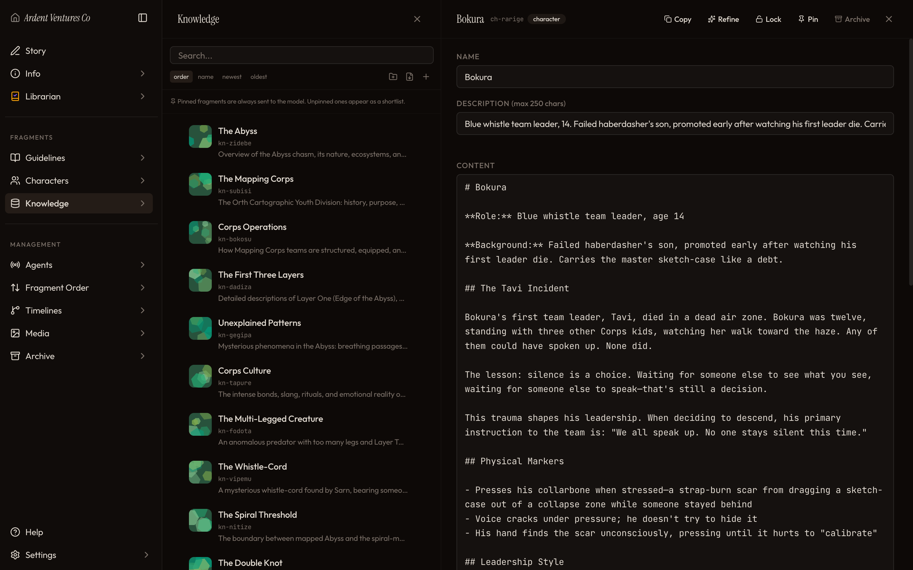
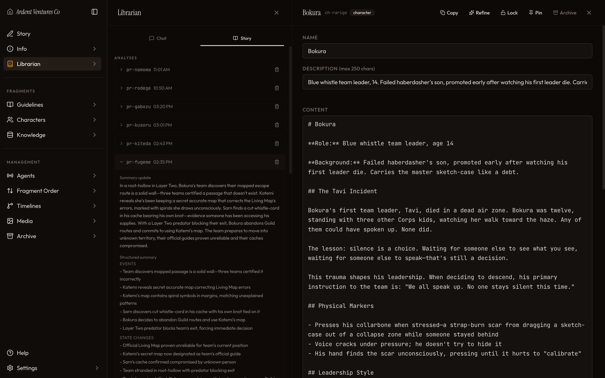
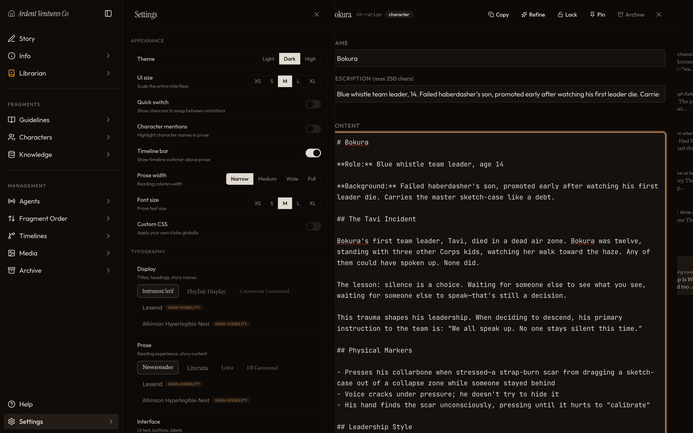
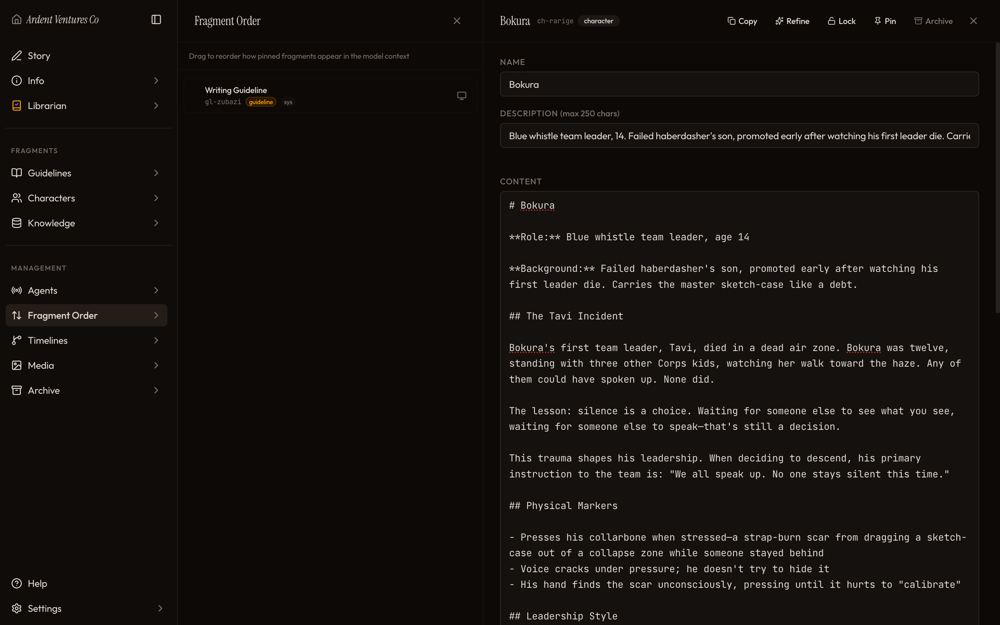

Stories that remember themselves
An AI-assisted fiction writing tool with living memory, character tracking, branching timelines, and a librarian that never forgets.
Latest: v1.7.0 · Local-first · Runs on Bun · No database required
An AI-assisted fiction writing tool with living memory, character tracking, branching timelines, and a librarian that never forgets.
Latest: v1.7.0 · Local-first · Runs on Bun · No database required

What is Errata
Errata is a local-first creative writing application where AI doesn't just generate prose — it understands your world. Characters, lore, timelines, and story arcs live as structured fragments that the AI reads, references, and evolves as your story grows.
Characters, knowledge, guidelines, and prose are versioned fragments. Compose them into context however you want — the AI sees exactly what matters.
A background AI agent that analyzes every passage, tracks character mentions, detects contradictions, and suggests new fragments to keep your world consistent.
Explore "what if" without losing anything. Branch your story, try different paths, and switch between timelines. Every version is preserved.
Single binary, no database, no cloud dependency. Your stories live on your filesystem. Bring your own LLM provider — any OpenAI-compatible API works.
Features
Write in Freeform, Guided, or Compose mode. Each passage gets a prompt and the AI generates prose that flows naturally from your existing story. Reorder, branch, and edit with a rich Tiptap editor. The context window is assembled from your fragments — not just raw text.

Define characters with markdown content, track version history, freeze critical text, and let the librarian auto-update fragments as your story evolves. Import SillyTavern character cards, or build your world from scratch.

After each generation, a background agent analyzes your prose: tracking character mentions, detecting contradictions, building timelines, and suggesting new fragments. Chat with it to ask about your world. It sees everything.

Advanced mode lets you configure exactly what the AI sees. Build context from ordered blocks: system prompts, fragments, summaries, and script blocks that run custom logic. Choose different models for generation, chat, librarian, and directions.

Fork your story at any point. Each timeline gets its own prose chain, fragments, and librarian history — fully isolated. Switch between branches instantly and merge ideas when you're ready.

Multiple themes, four font categories, custom CSS, text transforms, guided mode prompts, and a plugin system. Configure summarization thresholds, context limits, model temperatures — per role, per provider.

Gallery








How It Works
Single binary. No install, no database. Just run it and open localhost:7739.
Connect any OpenAI-compatible API. DeepSeek, OpenRouter, local models — your choice.
Add characters, knowledge, and guidelines. Or import a SillyTavern card to bootstrap instantly.
Prompt the AI, edit the output, branch timelines. The librarian tracks everything in the background.
Changelog
Under the Hood
Download Errata, connect your LLM, and let your stories build worlds that persist.